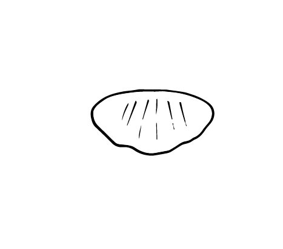

Discription:
Gnocchi are originally from Campania and were created from the imagination of the pasta-makers who, while remaining true to the tradition of semolina pasta, took their inspiration from the classic potato Gnocchi. Gnocchi have a distinctive concave, ribbed shape and are excellent for capturing and bringing out the best in denser sauces, such as Bolognese sauce. The most popular condiment for Gnocchi is tomato: from a simple tomato and basil sauce to the heartiest meat sauces, but they are also very good served with pesto.

-
begginermaster
-
smalllarg
-
shortlong